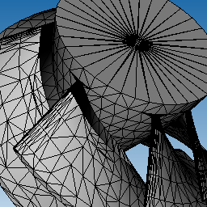
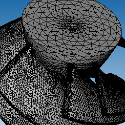
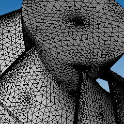
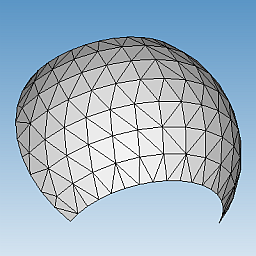
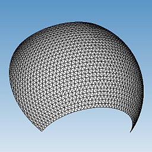
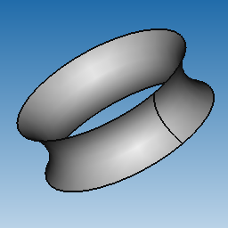
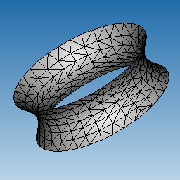
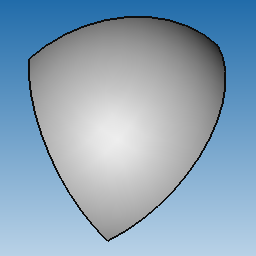
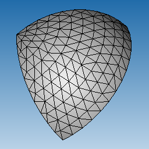

CAD Exchanger SDK can be used to generate meshes from B-Rep representations, either retrieved from imported files (e.g. from IGES, STEP, ACIS, Parasolid) or from created directly inside a user's application.
CAD Exchanger supports the so called visualization mesher as well as computational meshers. The former generates meshes that can be primarily used for visualization and simple computing purposes (e.g. bounding boxes, approximated surface area computing, collision detection, etc). The latter generate high quality meshes that can be used in various FEA (Finite-Element Analysis) computations.
The following picture shows three different meshes generated from the same B-Rep model (impeller):

Visual mesh |

Mefisto-generated mesh |

Netgen-generated mesh |
CAD Exchanger can also generate 3D (volumic) meshes. However they can only be saved into specific target mesh formats, and not inside CAD Exchanger's data model.
CAD Exchanger itself intensively uses visualization mesher when creating polygonal representations from B-Rep, or when exporting to mesh formats (such as STL, VRML or X3D).
ModelAlgo_BRepMesher which encapsulates meshing algorithms can generate meshes starting at different levels in the 3D model:
The following examples demonstrates applying the visualization mesher at different levels.
Example1: generation of meshes for all parts in the models which do not have polygonal representations:
Example2: generation of a mesh for a particular B-Rep body:
Visualization mesh has a form of triangulation and is primarily fitted for visualization and other purposes (e.g. calculation of a bounding box of the model). CAD Exchanger GUI application uses visualization mesh to display shaded presentations of the model in 3D views.
Computed triangulation is stored internally inside the B-Rep faces (ModelData_Face).
Visualization mesh can often be unusable for various finite element analysis algorithms which are sensitive to triangles shape. For example, the mesher can often produce significantly elongate triangles as shown on the following image:
Number and size of triangles in visualization mesh depend on the requested precision defined either via ModelAlgo_BRepMesherParameters::SetGranularity() using the ModelAlgo_BRepMesherParameters::Granularity enumeration value or via direct setting (ModelAlgo_BRepMesherParameters::SetChordalDeflection()).
The following images demonstrate coarser and finer meshes built for the same B-Rep shape:

Mesh built with coarser precision |

Mesh built with finer precision |
The finer the requested precision the longer it takes to produce the mesh and the greater memory footprint it will have. On 32 bit systems, requesting too fine precision for medium and complex models may result in a memory footprint exceeding available virtual memory and hence in application's forced termination. In most cases, default precision value should be sufficient.
If the flag GetUVCoordinates() is set to true then the visualization mesher will retrieve UV coordinates of mesh nodes in parametric domain of each surface and store them in resulting ModelData_IndexedTriangleSet. This only applies if the flag MergeFaceSets() is set to false, i.e. no stitching of triangle sets is performed.
For faces on closed periodic surfaces (e.g. cylindrical, conical, surfaces of revolution, etc) there will be two mesh nodes along the surface seam for each point on the seam-edge:

B-Rep face on a surface of revolution |

Resulting mesh |
For faces on surfaces with singularities (e.g. spherical, conical, B-Splines, etc) there will be multiple mesh UV-nodes corresponding to a point of singularity:

B-Rep face on a spherical surface |

Resulting mesh |
Mesh generation is a heavy-computational task and depending on model complexity and requested precision may take significant time. If the parameter Base_Settings::Common_ConcurrentMode is true, then on multi-core processor systems, the algorithm will try to run in parallel. However scalability will depend on model structure and unbalanced workloads are possible.
Computational mesh can be used for finite element analysis and other computations.
The following image shows a computational mesh built on a cylindrical surface similar to the one above:
To generate a computational mesh instead of visualization the computational mesher algorithm should be specified in the parameters objects set in the ModelAlgo_BRepMesher.
The example below demonstrates creation of a computational mesh with the help of Netgen mesher:
If the B-Rep shape does not have an internal triangulation, then Compute() will first invoke a visualization mesher prior to invoking the computational mesher.
For details on computational meshers refer to Computational meshers.
Any mesher follows the same bottom-up workflow:
This allows to have water-tight meshes along the shared B-Rep edges and ensures that any B-Rep vertex is mapped to a mesh node. The policy of edge discretization and face tessellation is determined by each mesher and its parameters.
Each B-Rep face initially maps to one triangle set (ModelData_IndexedTriangleSet). Triangle sets can be then stitched (merged) together as explained below.
If ModelAlgo_BRepMesherParameters::MergeFaceSets() is set to true (by default), then triangle sets (ModelData_IndexedTriangleSet) resulting from B-Rep faces of the same body will be merged into one ModelData_IndexedTriangleSet. This allows to get a single triangle set for entire solid and thus to have a water-tight triangulation. Otherwise there will be as many ModelData_IndexedTriangleSet's as there are faces in the original B-Rep body.
For sheet bodies stitching will be done inside each shell and standalone face of the body.
During meshing triangle sets will inherit appearance settings associated with the original B-Rep faces (see ModelData_BRepRepresentation::Appearance()). When merging triangle sets with different appearance settings will be put into different groups. Thus, if a solid box had 3 different colors associated with its child faces then the resulting polygonal representation will have at least 3 triangle sets, even if ModelAlgo_BRepMesherParameters::MergeFaceSets() is set to true. To ensure merging into a single triangle set either do not associate colors to faces or to invoke ModelAlgo_BRepMesher::Compute() for ModelData_Body (which does not store appearances).
The meshing algorithms support progress status update, including cancellation. The example below demonstrates how to add observers to a progress status object:
For details refer to Progress Status Support and Progress Bar Example.
Refer to Meshing.